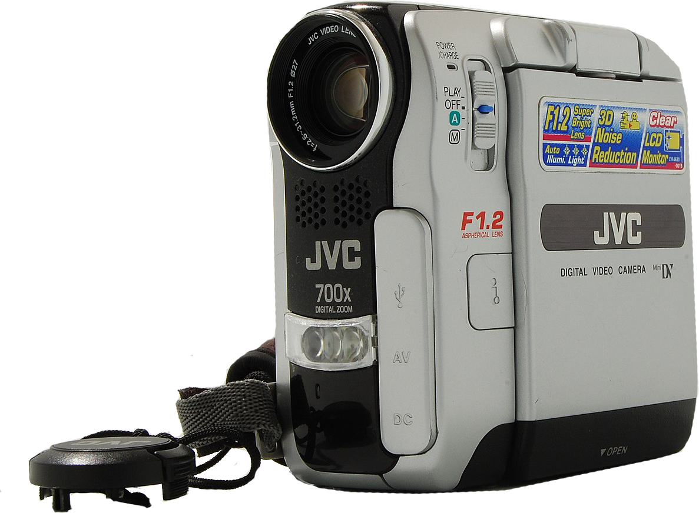

Videocameras

Browse our extensive range of video cameras for every level of expertise.
From compact, easy-to-use camcorders for family moments and special occasions, to professional-quality Full HD video cameras, filming in HD quality with lightweight, ergonomic designs.
Easily shoot and share family adventures with a compact family video camera. Designed to be taken everywhere, you'll never miss a moment of fun with our lightweight, powerful selection of camcorders with advanced zoom and touchscreen control.
Create cinematic memories with an HD camcorder or action camera. We offer a wide range of video gear from Canon, Sony, Panasonic and others.
Modern video cameras have numerous designs and use:
- Professional video cameras, such as those used in television production, may be television studio-based or mobile in the case of an electronic field production (EFP). Such cameras generally offer extremely fine-grained manual control for the camera operator, often to the exclusion of automated operation. They usually use three sensors to separately record red, green and blue.
- Camcorders combine a camera and a VCR or other recording device in one unit; these are mobile, and were widely used for television production, home movies, electronic news gathering (ENG) (including citizen journalism), and similar applications. Since the transition to digital video cameras, most cameras have in-built recording media and as such are also camcorders. Action cameras often have 360° recording capabilities.
- Closed-circuit television (CCTV) generally uses pan-tilt-zoom cameras (PTZ), for security, surveillance, and/or monitoring purposes. Such cameras are designed to be small, easily hidden, and able to operate unattended; those used in industrial or scientific settings are often meant for use in environments that are normally inaccessible or uncomfortable for humans, and are therefore hardened for such hostile environments (e.g. radiation, high heat, or toxic chemical exposure).
- Webcams are video cameras that stream a live video feed to a computer.
- Many smartphones have built-in video cameras and even high-end smartphones can capture video in 4K resolution.
- Special camera systems are used for scientific research, e.g. on board a satellite or a space probe, in artificial intelligence and robotics research, and in medical use. Such cameras are often tuned for non-visible radiation for infrared (for night vision and heat sensing) or X-ray (for medical and video astronomy use).